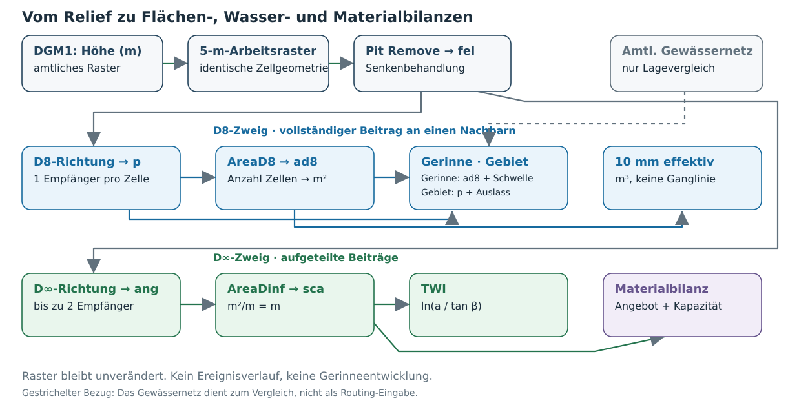
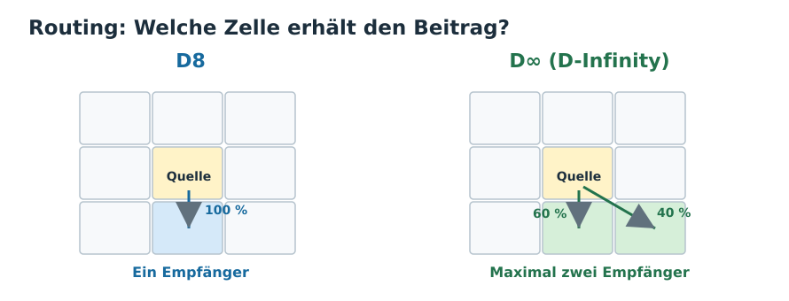
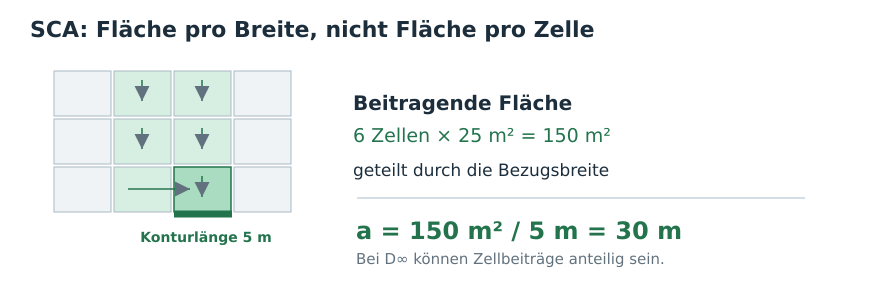
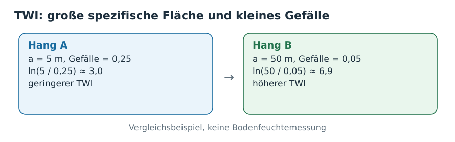
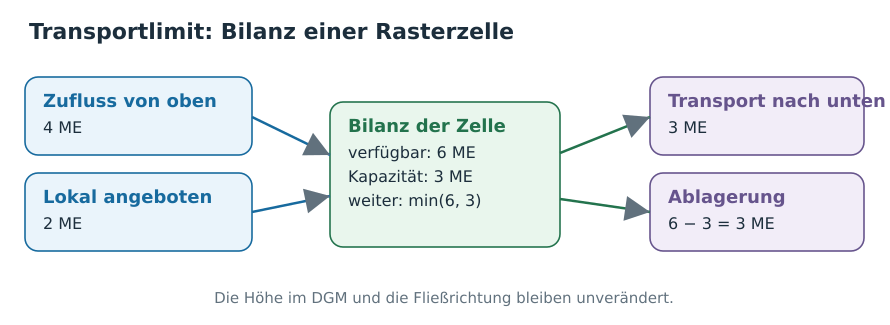

← Kursübersicht · NetLogo-Vergleich · Modellbildung im GIS · Daten, Algorithmen und Literatur
Ein Oberlauf, drei Fragen
Im NetLogo-Modell Grand Canyon ließen sich Tropfen auf einem Relief verfolgen: Wo treffen ihre Wege zusammen? Im Modell Erosion wurde außerdem Gelände abgetragen; die nächste Wasserbewegung fand bereits auf verändertem Relief statt. River Meanders veränderte die Gerinneform durch Erosions- und Ablagerungsregeln.
Hier betrachten wir einen vorhandenen Oberlauf im realen Gelände. Zuerst bestimmen wir, welche Rasterzellen zu einem Punkt am Bach entwässern. Dann fragen wir, welchen zusätzlichen Informationsgehalt eine Regenannahme und schließlich eine begrenzte Sedimenttransportkapazität liefern. Das DGM bleibt in allen Rechnungen unverändert.
Untersuchungsfall: ein kleiner Oberlauf des Roten Wassers im Burgwald oder ein vergleichbarer selbstgewählter Bach. Der Kartenausschnitt kann etwa 2 × 2 km umfassen; gerechnet wird auf einem größeren DGM, das sämtliche Zuflüsse oberhalb der untersuchten Stelle enthält.
Arbeitszeit: Mit beschafften Daten, vorbereitetem 5-m-Raster und funktionierendem TauDEM ca. 75–90 Minuten. Datenbeschaffung und Softwareinstallation kommen hinzu; sie sind nicht Teil dieses Zeitansatzes. Der durchgehende Weg verwendet QGIS für Datenkontrolle, Rasterrechner und Darstellung; TauDEM für die Geländeverbindungen und den Stofftransport. Die Bedienung des gemeinsamen QGIS-Processing-Skripts steht in den blauen Klappboxen.

Flussdiagramm in draw.io bearbeiten. Blau: technischer Ablauf; grün: fachliche Erklärung. Fachliche und technische Klappboxen vertiefen die jeweiligen Arbeitsschritte.
1 · Gelände und Referenz öffnen (ca. 10 Minuten)
Öffnen Sie in QGIS:
- das DGM1 Hessen für den gewählten Oberlauf; bei mehreren Kacheln zuerst ein virtuelles Raster (Raster → Sonstiges → Virtuelles Raster erzeugen) erstellen;
- die Gewässerlinien des ATKIS-Basis-DLM als unabhängige Lage-Referenz, nicht als Eingabe für das Relief-Routing;
- die Landnutzungsflächen aus dem ATKIS-Basis-DLM: prüfen Sie, ob Wald, Offenland, Siedlung und Verkehrsflächen über die Attribute unterscheidbar sind. Sie werden noch nicht in die Routingrechnung einbezogen;
- optional ein amtliches Orthofoto zur Kontrolle von Wegedämmen, Durchlässen und Wasserflächen.
Bezug: Unter Geodaten online im Downloadcenter 3D-Daten → DGM1 und Digitales Landschaftsmodell → Basis-DLM wählen. Für QGIS ist bei Basis-DLM ein Shape-Download einfacher zu öffnen als NAS/XML. Laden Sie beim DGM auch die oberhalb der Bachstelle liegenden Kacheln; bei ATKIS reichen die für den Vergleich benötigten Gewässer- und Nutzungsobjekte. Produktinformationen: HVBG – DGM, HVBG – Basis-DLM. Im Burgwald verwenden Sie EPSG:25832 (ETRS89 / UTM 32N, Meter). Das DGM1 enthält Geländehöhen in Metern; es ist keine Karte der Flusstiefe.
Erstellen Sie eine Schummerung (Werkzeugsuche: Hillshade/Schummerung). Wählen Sie im sichtbaren Bachabschnitt eine Krümmung oder einen Durchlass als Vergleichsstelle. Prüfen Sie an der Schummerung: Ist die Talrinne im DGM erkennbar? Liegt der kartierte Bach dort oder leicht versetzt?
In QGIS Raster → Projektionen → Warp (Reprojektieren): Ziel-KBS EPSG:25832, Zielauflösung 5 × 5 m, Resampling Average/Mittelwert, GeoTIFF-Ausgabe processing/dgm5.tif. Bei mehreren Quellkacheln zunächst das virtuelle Raster als Eingabe wählen. Nicht das DGM auf 2 × 2 km beschneiden: Der Kartenausschnitt ist nicht das Rechengebiet. Alle späteren Raster verwenden Ausdehnung, Ursprung und Zellweite von dgm5.tif. Original-DGM1 unverändert aufheben.
Wenn ein 5-m-Arbeitsraster bereits bereitgestellt wird, entfällt dieser Schritt. Eine höhere Pixelzahl ist nicht automatisch eine genauere Darstellung einer Gewässersohle.
Dateien wiederfinden: Speichern Sie das QGIS-Projekt im Arbeitsordner und verwenden Sie darin data/ für Originaldaten, processing/ für abgeleitete Eingaben und results/ für Ausgaben. Prüfen Sie bei jedem Layer unter Eigenschaften → Information/Quelle Dateipfad, Format, CRS, Ausdehnung und Pixelgröße. Eine gespeicherte .qgz-Projektdatei verweist auf Geodaten; sie enthält diese nicht automatisch. Nach dem Entpacken eines Shape-Downloads bleiben .shp, .shx, .dbf und .prj zusammen. Notieren Sie den tatsächlich bezogenen Datenstand und die verwendeten Dateien, auch wenn ein anderes Landesportal als der hessische Zugang nötig war.
Die Akkumulation einer Zelle berücksichtigt nur Zuflüsse, die im berechneten Raster existieren. Schneidet die obere DGM-Grenze einen Hang ab, fehlt dessen Beitrag. TauDEM kennzeichnet entsprechende Resultate bei aktivierter Edge-Contamination-Prüfung als NoData. Das ist keine Fehlfunktion, sondern ein Hinweis auf eine unvollständige Bilanz. Erst das ausreichend große Berechnungsgebiet macht die Aussage an der ausgewählten Bachstelle sinnvoll.
2 · Aus Höhenwerten werden Entwässerungsverbindungen (ca. 15 Minuten)
Öffnen Sie Verarbeitung → Werkzeugkiste → Skripte → Modellieren in der Geographie → TauDEM: Abflusswege, Einzugsgebiet, Wasser, Sediment. Wählen Sie Berechnung 1 – Grundlage, das Raster processing/dgm5.tif und den Ergebnisordner results. Das Skript führt die folgende TauDEM-Folge auf demselben dgm5.tif aus:
| TauDEM-Werkzeug | Eingabe → Ausgabe | Bedeutung des Ergebnisses |
|---|---|---|
| Pit Remove | dgm5.tif → fel.tif |
Für den Abfluss aufbereitete Höhenwerte, weiterhin m |
| D8 Flow Directions | fel.tif → p.tif, sd8.tif |
p: kodierte Richtung zu einem Nachbarn; sd8: Gefälle m/m |
| D8 Contributing Area | p.tif → ad8.tif |
Anzahl der zu einer Zelle entwässernden Zellen einschließlich der Zelle selbst |
Das Skript ruft dafür PitRemove, D8FlowDir und AreaD8 auf. Lassen Sie die Prüfung auf Randeinflüsse aktiviert und setzen Sie keine Auslasspunkte als Einschränkung. Stellen Sie ad8.tif mit logarithmischer Farbskala oder mehreren abgestuften Klassen dar: Die großen Werte markieren die potenziellen Konzentrationslinien im Relief. Prüfen Sie außerdem mit dem Rasterrechner "fel@1" - "dgm5@1" an mindestens einer Vertiefung, wo das Senkenfüllen Höhen verändert hat. Ein Wert von 0 bedeutet: unverändert.
Lesen Sie den Wert an einer Zelle der Talrinne ab. Bei 5 m Rasterweite gilt:
\[ A_{\mathrm{D8}}=N_{\mathrm{D8}}\cdot 25\ \mathrm{m}^2. \]
Beispiel: ad8 = 4 000 bedeutet 100 000 m² = 10 ha beitragende Fläche – nicht 4 000 Liter, 4 000 m³/s oder 4 000 tatsächlich dort eintreffende Regentropfen.
Routing legt für jede Zelle fest, wohin ein Beitrag weitergegeben wird. Akkumulation zählt bzw. summiert anschließend, was von oberhalb ankommt. Bei D8 stehen im Raster p.tif nur Richtungscodes (acht mögliche Nachbarn), in ad8.tif dagegen Zellanzahlen. Die Zahl 4000 ist nicht die vierte Fließrichtung, sondern 4000 vollständig verbundene Zellen einschließlich der Zielzelle. Erst die Multiplikation mit der Zellfläche erzeugt eine Fläche in m².
An einer Wasserscheide sind Zuflüsse von der jeweils anderen Seite nicht angeschlossen. Umgekehrt können am Auslass viele Hangzellen zusammenkommen. Beides ergibt sich aus denselben Richtungsverbindungen; die Akkumulation stellt deshalb keine neue Fließregel dar.
Pit Remove hebt geschlossene Vertiefungen bis zum niedrigsten Überlaufniveau an, damit eine zusammenhängende Abflussverbindung entstehen kann. Das ist für das Relief-Routing zweckmäßig, aber keine Beobachtung eines aufgefüllten Geländes. Echte Senken, Straßendämme, Brücken und Durchlässe können andere Regeln erfordern. Prüfen Sie eine auffällige Abweichung zwischen kartiertem Bach und berechnetem Weg zunächst im ursprünglichen DGM, nicht erst durch weiteres Glätten.
Öffnen Sie scripts/taudem_burgwald_processing.py im QGIS-Processing-Skripteditor und speichern Sie es dort als .py. Es erscheint anschließend unter Skripte → Modellieren in der Geographie. Wählen Sie Berechnung 1 – Grundlage, das DGM und einen dauerhaften Ergebnisordner. Das Skript berechnet fel, p, sd8, ad8, ang, slp, sca, twi und die beiden Gerinneschwellen in einem Lauf. Die Schwellen werden aus 2 ha und 5 ha in Zellzahlen umgerechnet.
Linux und Windows verwenden dieselbe .py-Datei. Im Dialog können Sie ein TauDEM-Binärverzeichnis und den MPI-Launcher (mpiexec oder dessen vollständigen Pfad) angeben. TauDEM und MPI müssen zum jeweiligen Betriebssystem passen. Die Dateien werden bei erneutem Aufruf nicht überschrieben; für eine zweite Grundlage einen anderen Ergebnisordner wählen.
Wenn der Lauf scheitert: Lesen Sie im Processing-Protokoll den ersten fehlgeschlagenen Schritt mit Fehlermeldung und verwendeten Pfaden. Prüfen Sie, ob die Eingabedatei gespeichert und erreichbar ist oder ob TauDEM beziehungsweise MPI nicht gefunden wird. Eine Rasteranzeige in QGIS allein belegt noch keinen für TauDEM verwendbaren Dateipfad. Wird dagegen die Randprüfung als NoData sichtbar, prüfen Sie das Rechengebiet; das Abschalten der Randprüfung würde fehlende Zuflüsse verdecken.
Dokumentation und KI gezielt nutzen: Geben Sie den betroffenen Aufruf, Fehlermeldung, Softwareversion und die geprüften Dateieigenschaften an. Lassen Sie sich eine Korrektur und ihre Wirkung erklären. Prüfen Sie vorgeschlagene Werkzeugnamen und Optionen in der Werkzeugdokumentation. Vor dem Ausführen müssen Sie Eingaben, Operation, veränderte Parameter und Ausgabe benennen können. Ändern sich dabei Zellweite, Senkenbehandlung oder Randprüfung, verändert sich die Modellrechnung; eine solche Änderung braucht eine fachliche Begründung. Bewahren Sie den vorherigen Stand auf, übernehmen Sie eine begrenzte Änderung und prüfen Sie deren Ergebnis an den Kontrollen dieses Arbeitsblatts. Bei unklarer Wirkung hilft die gemeinsame Fehlersuche im Seminar.
3 · Aus Zuflüssen wird ein Einzugsgebiet (ca. 15 Minuten)
Gerinne sind zunächst keine Eingabedaten: Wir zeichnen eine potenzielle Bachlinie dort, wo ausreichend viele Oberhangzellen zusammenkommen.
- In der bereits gerechneten Grundlage hat TauDEM Stream Definition By Threshold die Schwelle 2 ha = 800 Zellen als
src_2ha.tifgespeichert (bei 5-m-Zellen). - Die zweite Schwelle 5 ha = 2 000 Zellen liegt als
src_5ha.tifvor. Schalten Sie die beiden 1/0-Raster abwechselnd über der Schummerung ein und überlagern Sie die amtliche Gewässerlinie. - Wählen Sie an Ihrem Bach einen Punkt auf einer berechneten
src_2ha-Gerinnezelle als Auslass. Erstellen Sie einen Punktlayerprocessing/auslass.shpmit dem ganzzahligen Feldid(für den einen Punktid = 1). Der Punkt darf nicht lediglich optisch auf der ATKIS-Linie liegen. - Starten Sie dasselbe Processing-Skript mit Berechnung 2 – Einzugsgebiet: Ergebnisordner
results, Auslassauslass.shp, Verschieben = 0. Intern rechnet TauDEM Gage Watershed mitp.tifund schreibtbecken.tif. Die Rasterzellen mit Wert 1 bilden das zum Punkt entwässernde Gebiet. Stellen Sie dessen Grenze zusammen mitad8.tifdar.
Die ATKIS-Linie besitzt eine eigene Generalisierung, Lageunsicherheit und Erhebungsgeschichte. Unterschiede zum DGM können deshalb auch die Referenz betreffen.
Prüfung am eigenen Bach: Wo liegt die Wasserscheide? Welche Seitenhänge sind angeschlossen? Verändert die Gerinneschwelle die eingezeichneten Bachanfänge, obwohl p.tif und das Einzugsgebiet am unveränderten Auslass gleich bleiben? Vergleichen Sie den berechneten Talweg gerade an der gewählten Krümmung mit der amtlichen Gewässerlinie. Die Krümmung kann im Relief bereits enthalten sein; der Algorithmus erzeugt sie nicht durch Ufererosion.
Im Processing-Skript, Berechnung 2 können Sie „Auslass maximal um N Zellen verschieben“ = 2 einstellen. TauDEM Move Outlets To Streams sucht dann entlang der D8-Verbindung eine Gerinnezelle (Standard src_2ha.tif). Das Skript speichert auslass_auf_gerinne.shp und berechnet daraus becken.tif. Kontrollieren Sie dist_moved und die tatsächlich verwendete Lage. Bei 5 m Rasterweite sind dies höchstens zwei D8-Schritte (je nach Richtung bis rund 14,1 m); wenn kein Gerinne erreicht wird, wählen Sie den Auslass neu. Die Auslassposition bestimmt das Ergebnis; eine automatische Verschiebung darf nicht unbemerkt eine andere Fragestellung erzeugen.
Die Gerinneschwelle markiert Zellen mit ad8 oberhalb eines vorgegebenen Flächenbeitrags als potenziellen Bach. Bei 5-m-Zellen: 800 × 25 m² = 2 ha. Eine höhere Schwelle lässt Bachlinien später beginnen; sie ändert weder das D8-Richtungsraster p noch die reale Quelle des Bachs. Bei 10-m-Zellen entsprechen 200 Zellen denselben 2 ha – die Schwelle muss also in Fläche, nicht in Zellzahl, verglichen werden.
Der Auslass ist die Rasterzelle, zu der alle ausgewiesenen Oberlieger entwässern. Ihre Menge bildet das Einzugsgebiet. Dessen Rand heißt Wasserscheide: Nach der verwendeten Routingregel führen die Abflusswege außerhalb nicht zu diesem Auslass. Die Lage des Auslasses ist daher eine fachliche Entscheidung, kein beliebiger Kartenmarker.
4 · Verzweigung am Hang: D∞ statt D8 (ca. 10 Minuten)
Die Grundlage (Berechnung 1) hat auf demselben fel.tif zwei weitere TauDEM-Schritte bereits ausgeführt:
| TauDEM-Werkzeug | Eingabe → Ausgabe | Werte |
|---|---|---|
| D-Infinity Flow Directions | fel.tif → ang.tif, slp.tif |
Winkel rad und lokale Hangneigung m/m |
| D-Infinity Contributing Area | ang.tif → sca.tif |
spezifische beitragende Fläche m²/m = m |
D8 leitet den gesamten Zellbeitrag an einen Empfänger. D∞ verteilt ihn je nach berechnetem Winkel auf höchstens zwei benachbarte Zellen. Vergleichen Sie auf einer breiten Hangfläche und im Tal die Muster von ad8 und sca. Achten Sie dabei darauf, dass die Raster nicht dieselbe Einheit haben. sca lässt sich nicht allein durch eine andere Farbskala in ad8 umrechnen.
Für einen Zahlenvergleich wäre die jeweilige Flächen- beziehungsweise Breitenbezugsgröße anzugleichen; der hier geforderte Mustervergleich allein isoliert den Einfluss der Routingregel nicht.
Die Grundlage berechnet außerdem den TauDEM Topographic Wetness Index aus sca.tif und slp.tif als twi.tif. Zeigen Sie die höchsten TWI-Werte und betrachten Sie, ob es sich eher um flache Talbereiche oder steile Hänge handelt.
D8: Von acht Nachbarn erhält genau einer den gesamten Beitrag; das kann am Hang künstlich schmale Fließlinien erzeugen. D∞ (D-Infinity): Die Richtung ist ein kontinuierlicher Winkel aus dreieckigen Teilflächen des Höhenrasters. Liegt er zwischen zwei Nachbarzellen, wird der Beitrag anteilig auf diese beiden verteilt. Das ∞ bezeichnet also die kontinuierlich möglichen Richtungswinkel, nicht unendlich viele Empfänger.

Im Beispiel rechts sind 60/40 Prozent nur zur Illustration gewählt, keine festen TauDEM-Gewichte. Ein klassisches MFD (Multiple Flow Direction) kann Beiträge auf mehr als zwei tieferliegende Nachbarn verteilen. D∞ ist nicht gleichbedeutend mit klassischem MFD. Originalmethode: Tarboton (1997).
SCA = Specific Catchment Area, deutsch spezifische beitragende Einzugsfläche. TauDEM AreaDinf summiert die anteiligen Flächenbeiträge von oberhalb und bezieht sie im Standardfall auf die Rasterbreite. Für quadratische 5-m-Zellen gilt schematisch:
\[ a=\frac{A_{\mathrm{eff}}}{\Delta x}, \qquad [a]=\frac{\mathrm{m}^2}{\mathrm{m}}=\mathrm{m}. \]

Lesebeispiel: sca = 30 bedeutet 30 m² Beitrag je Meter Bezugsbreite, also rechnerisch 150 m² bei 5 m Zellbreite. Anders als ad8 enthält sca Teilbeiträge und ist bereits auf die Breite bezogen. ad8 = 30 bedeutet dagegen bloß 30 vollständig angeschlossene Zellen. Die beiden Raster sind deshalb weder in Wert noch in Routingannahme direkt vergleichbar. Grundlage: TauDEM-Dokumentation zu AreaDinf.
TWI = Topographic Wetness Index. TauDEM verbindet die spezifische Fläche a = sca mit der lokalen Neigung tan(β) = slp:
\[ \mathrm{TWI}=\ln\!\left(\frac{a}{\tan\beta}\right). \]

Bei gleicher Neigung steigt der Index mit a, bei gleichem a steigt er mit geringerem Gefälle. Er beschreibt damit eine topografische Disposition innerhalb eines Modells, keine gemessene Bodenfeuchte. Für die Auswertung ist zusätzlich die Behandlung sehr kleiner oder verschwindender Neigungen wichtig. Hydrologischer Hintergrund: Beven & Kirkby (1979).
5 · Eine Abflussannahme ergänzt die Fläche (ca. 5 Minuten)
Im QGIS-Rasterrechner berechnen Sie aus ad8.tif das Raster results/volumen_10mm.tif:
"ad8@1" * 25 * 0.010Annahme: Jede Zelle liefert einmalig 10 mm effektiven Abfluss (also Niederschlagsüberschuss nach allen Verlusten). Weil jede Zelle 25 m² groß ist, entspräche das 0,25 m³ pro beitragender Zelle. Der Rasterwert am gewählten Auslass ist damit die potenzielle gesamte Abflussmenge in m³, die sich aus dieser angenommenen flächendeckenden Abflussbildung ergibt – wenn alle Beiträge den Auslass erreichen.
Prüfen Sie den Rasterrechner-Ausdruck über seine Größen: ad8 zählt Zellen, 25 m² ist die Zellfläche und 0,010 m die effektive Abflusshöhe. Für den bereits verwendeten Kontrollwert von 2 ha müssen daraus 200 m³ entstehen. Das prüft Einheiten und Umsetzung der gesetzten Annahme; die tatsächliche Abflussbildung wird dadurch nicht bestätigt. Dieselbe Kontrolle gilt für einen von KI vorgeschlagenen Ausdruck. Sie kennen weiterhin weder die Fließzeit noch einen Spitzenabfluss in m³/s.
10 mm bezeichnet hier effektiven Abfluss, nicht automatisch 10 mm Niederschlag. Bei einem Niederschlag P und einem Abflussanteil C wäre der Zellbeitrag P · C · 25 m². Ein nach Landnutzung differenziertes C wäre eine zusätzliche empirische Zuordnung. ATKIS enthält Nutzungs- und Bedeckungsklassen, aber keinen gemessenen Abflussbeiwert, keine Bodenleitfähigkeit und keinen Sedimentabtrag. Für eine belastbare Differenzierung wären Boden, Versiegelung, Zustand und Ereignisannahme zu begründen.
Wenn ein Raster runoff_zelle_m3.tif für jede Zelle einen angenommenen Beitrag in m³ enthält, wählen Sie im Processing-Skript Berechnung 3 – gewichtete Abflussakkumulation. Eingabe ist dieses Gewichtsraster, Ergebnisordner wieder results. Intern verwendet TauDEM D8 Contributing Area die vorhandenen p.tif-Verbindungen. Das Ergebnis volumen_gewichtet_m3.tif enthält die Summe der Zellvolumina in m³, nicht eine Zellzahl.
runoff_zelle_m3.tif muss exakt auf dem dgm5-Raster liegen. Bei konstant 0,25 m³ pro Zelle stimmt das Ergebnis (abgesehen von Rundung und NoData) mit volumen_10mm.tif überein. Prüfen Sie diese Bedeutung auch bei vorgeschlagenem Code: Ein lokaler Zellbeitrag und ein bereits akkumuliertes Volumen sind unterschiedliche Eingaben; eine erneute Akkumulation des Letzteren würde Beiträge mehrfach zählen.
6 · Materialangebot, Transportgrenze, Ablagerung (ca. 15 Minuten)
Jetzt erhält dasselbe D∞-Entwässerungsnetz zwei neue Raster. Wir verwenden bewusst synthetische, dimensionslose Materialeinheiten (ME), weil weder gemessene Erosionsraten noch Sedimenttransportparameter vorliegen. Jeder Wert bezieht sich auf denselben gedachten Bilanzfall; eine reale Zeitdauer wird nicht simuliert.
Erzeugen Sie im QGIS-Rasterrechner:
| Raster | Ausdruck | Bedeutung |
|---|---|---|
processing/angebot.tif |
("dgm5@1" * 0) + 0.02 |
Jede gültige Zelle bietet 0,02 ME an |
processing/kapazitaet.tif |
0.2 * sqrt("sca@1" / 5) * (("slp@1" + 0.0001) / 0.05) |
Maximal transportierbare ME am Zellabgang; nimmt mit spezifischer Fläche und Gefälle zu |
Die Zahlen 0,02 ME, 0,2 ME, 5 m als Bezugsbreite der Formel, 0,05 m/m und der kleine Gefällezusatz 0,0001 sind gesetzte Versuchsparameter, keine kalibrierten Naturkonstanten. sca / 5 m und slp / 0,05 sind dimensionslos; daher steht die Kapazität wie das Angebot in ME.
Starten Sie TauDEM D-Infinity Transport Limited Accumulation mit ang.tif, angebot.tif (Supply) und kapazitaet.tif (Transport Capacity). Speichern Sie transport.tif und ablagerung.tif. Das Werkzeug bilanziert in jeder Rasterzelle:
\[ \begin{aligned} M_{\mathrm{verfügbar}} &= M_{\mathrm{von\ oben}} + M_{\mathrm{lokal}}, \\ M_{\mathrm{weiter}} &= \min\!\left(M_{\mathrm{verfügbar}}, T_{\mathrm{cap}}\right), \\ M_{\mathrm{abgelagert}} &= M_{\mathrm{verfügbar}} - M_{\mathrm{weiter}}. \end{aligned} \]
Materialangebot (tsup) ist die hypothetisch neu bereitgestellte Menge pro Zelle. Transportkapazität (tc) ist die im selben Bilanzfall maximal weiterleitbare Menge. Was von oberhalb kommt, wird zum lokalen Angebot addiert. Reicht die Kapazität nicht, bleibt eine Restmenge als Ablagerung (tdep) zurück; die tatsächlich weitergegebene Menge steht in tla.

Die Rasterwerte sind in dieser Übung ME pro gedachtem Bilanzfall, keine gemessenen Sedimentmassen oder Frachten pro Sekunde. Die Rechnung enthält keine Zeitintegration und aktualisiert nicht das Höhenraster. Werkzeugdefinition: TauDEM DinfTransLimAccum.
Zeigen Sie ablagerung.tif über slp.tif: Wo reicht die gesetzte Kapazität nicht für das ankommende Material? Prüfen Sie dieselbe Stelle mit transport.tif. Ändern Sie anschließend nur den Vorfaktor 0,2 auf 0,05, berechnen Sie kapazitaet.tif neu und führen Sie die Transportrechnung erneut aus. Welche Ablagerungsbereiche wachsen?
Grenze des Ergebnisses: Die Rechnung transportiert angebotene Modellmengen entlang festgelegter D∞-Verbindungen. Sie berechnet weder reale Erosion aus Schubspannung noch die Änderung der DGM-Höhen. Ihre Ablagerungskarte ist kein Nachweis von Sedimentbänken am Bach.
Speichern Sie beide Eingaberaster mit denselben Grenzen und Pixelzentren wie ang.tif und prüfen Sie die NoData-Maske. Wählen Sie im Processing-Skript Berechnung 4 – Transport und Ablagerung, den Ergebnisordner results, angebot.tif und kapazitaet.tif. Intern läuft DinfTransLimAccum; es schreibt transport.tif und ablagerung.tif. Für den zweiten Durchlauf mit Kapazitätsfaktor 0,05 setzen Sie zusätzlich den Ausgabesuffix kap05; dadurch entstehen transport_kap05.tif und ablagerung_kap05.tif, ohne den ersten Versuch zu überschreiben.
Bei einer Änderung des Ausdrucks oder des Skripts vergleichen Sie die betroffenen Zeilen mit dem vorherigen Stand: Wurde nur der Kapazitätsfaktor geändert? Angebot, Routing und Rastergitter müssen für diesen Vergleich gleich bleiben. Prüfen Sie das Ergebnis an der bereits erläuterten Bilanz: Bei 4 ME Zufluss, 2 ME lokalem Angebot und 3 ME Kapazität werden 3 ME weitergegeben und 3 ME zurückgehalten. Ein fehlerfreier Programmlauf allein prüft diese Bedeutung nicht.
Eine physikalisch gestützte Erosions- oder Sedimentfracht benötigt mindestens Materialeigenschaften, Verfügbarkeit/Abtragsbedingungen, einen transportwirksamen Abfluss und eine dazu passende Kapazitätsbeziehung. Unsere Kapazitätsformel ist nur eine prüfbare Hypothese: mehr beitragende Fläche und stärkeres Gefälle erlauben mehr Transport. Ob und wie stark das tatsächlich gilt, ist damit nicht belegt. Selbst bei realistischen Parametern würde TauDEMs Transportakkumulation das Gelände nicht aktualisieren. Die Rückwirkung auf den weiteren Abfluss war im NetLogo-Modell Erosion bereits als Regel enthalten; hier fehlt sie ausdrücklich.
Befund am untersuchten Bach festhalten
Legen Sie im QGIS-Projekt eine Ansicht mit Schummerung, ATKIS-Bach, Auslass, D8-Einzugsgebiet und der 2-ha-Gerinnelinie an. Für die zweite Ansicht schalten Sie TWI oder Ablagerung ein. Erläutern Sie an einer konkreten Abweichung zwischen amtlichem Gerinne und berechneter Linie: Liegt sie plausibel an DGM, Rasterweite, Senkenbehandlung oder Routingregel? Halten Sie daneben fest, welche Größe erst durch die 10-mm-Annahme und welche erst durch Materialangebot/Kapazität entstanden ist.
Benennen Sie zu dieser Abweichung, welche Erklärung Ihre Daten stützen, was offenbleibt und welche Entscheidung Sie deshalb beibehalten oder ändern. Die Rechnungen beziehen sich auf die vorhandene Geländeform; eine zeitliche Mäanderentwicklung wurde damit nicht berechnet.
Nutzen Sie dafür die bereits entstandenen Dateien, Processing-Aufrufe und Kommentare. Halten Sie bei einer technischen Korrektur knapp fest: Problem, übernommene Änderung, verwendete Hilfe oder Dokumentation und Ergebnis der eigenen Kontrolle. Bei KI-Hilfe nennen Sie das verwendete System und das Datum. Eine Chatabschrift ersetzt weder den ausgeführten Code noch die fachliche Begründung. So lässt sich später unterscheiden, ob zwei Ergebnisse wegen anderer Daten, Annahmen oder einer technischen Korrektur voneinander abweichen.
Leiten Sie aus DGM1 zusätzlich ein 10-m-Raster desselben Berechnungsgebiets ab und wiederholen Sie Pit Remove → D8 → AreaD8. Vergleichen Sie am gleichen realen Auslass Gerinnelage und Einzugsgebietsfläche in m², nicht die Zellzahlen. Verwenden Sie für 2 ha als Gerinneschwelle nun 200 Zellen. Unterscheiden Sie Änderungen durch Generalisation des Reliefs von den rein rechnerischen Folgen einer größeren Zellfläche.
processing/dgm5.tif
processing/auslass.shp (+ .shx, .dbf, .prj)
results/fel.tif results/p.tif results/ad8.tif
results/ang.tif results/slp.tif results/sca.tif
results/src_2ha.tif results/becken.tif results/twi.tif
results/volumen_10mm.tif
processing/angebot.tif processing/kapazitaet.tif
results/transport.tif results/ablagerung.tifZwischenschritte sd8, src_5ha und ein verschobener Auslass helfen bei der Kontrolle. Die Erklärung der Werkzeuge, inklusive SAGA-/GRASS-Varianten und Primärliteratur, steht im separaten Kompendium.